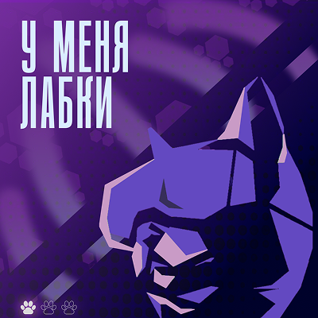
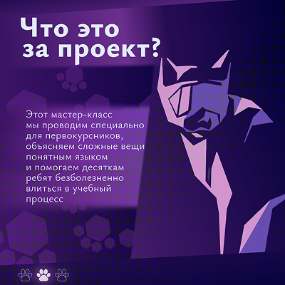
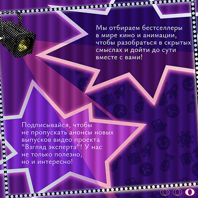

Работа 1
Работа выполнена в Figma (основной мой инструмент для графических изображений) и состоит из 3 изображений.
Была сделана в рамках проекта от студенческого сообщества, в котором я состою (проект заключается в создании картинок к посту, описывающему проект).
В работе преобладают фиолетово-сливовые оттенки, перетекающие один в другой с помощью градиента, а также главный графический элемент первых двух картинок — кот в VR-очках — имеет более лавандовый цвет.


